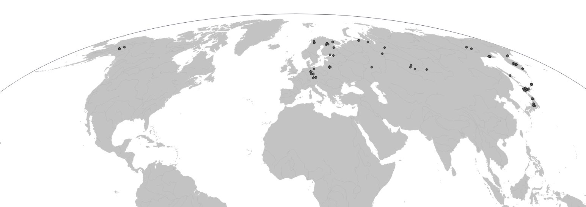

This map shows the sampling locations of D. complanatum used in our ongoing biogeographic study.
The samples used in this study were obtained through multiple sources, including:
Each sample source is properly acknowledged in the metadata and, where relevant, in the associated publication.
All samples were used in accordance with the terms agreed upon with the original collectors or institutions.
A more interactive and updated version of the map will be released in the future.
back to Research - Club mosses (Diphasiastrum, Lycopodiaceae)